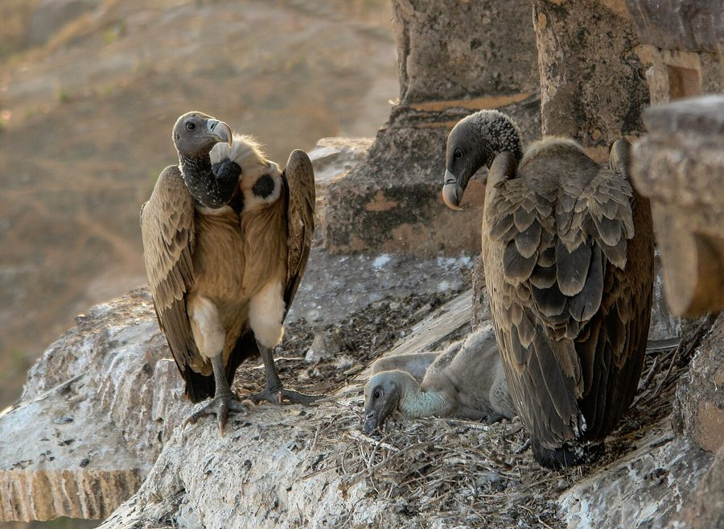

भारतीय गिद्धIndian Vulture
Gyps indicus · Accipitridae · BRD-0342

- Scientific name वैज्ञानिक नाम
- Gyps indicus (Scopoli, 1786)
- Family कुल
- Accipitridae
- Hindi हिंदी
- भारतीय गिद्ध
- Local names स्थानीय नाम
- bharatiya gidh, gidh, indian vulture
- Status here यहाँ की स्थिति
- native
- Movement आवागमन
- Resident, here all year
- Known from कहाँ दर्ज
- Others have published records from the Basti–Ayodhya districts बस्ती–अयोध्या के ज़िलों से दूसरों के प्रकाशित अभिलेख
- IUCN IUCN
- CR
- Review समीक्षा
- not yet reviewed
When to look कब देखें
Present all year. साल भर मौजूद।
Tell it apart from इनसे अलग पहचानें
भारतीय गिद्ध / Indian Vulture
Gyps indicus (Scopoli, 1786) — Accipitridae
भारतीय गिद्ध — बेकर (1928) के अनुसार यह गंगा के मैदान के दक्षिण में लगभग पूरे भारत में पाया जाने वाला बड़ा अपमार्जक गिद्ध है, जो चट्टानों की कगारों पर घोंसला बनाता है और "शायद कभी" पेड़ों पर नहीं। आईयूसीएन रेड लिस्ट (BirdLife International 2021) में यह गंभीर रूप से संकटग्रस्त (CR) है; इसकी आबादी पशु-चिकित्सा में प्रयुक्त डाइक्लोफेनाक दवा से गिरी।
Quick Identification त्वरित पहचान
| Feature | Description | |
|---|---|---|
| Habit | Large, heavy-bodied soaring obligate scavenger of open plains and rocky hills | |
| Size | Large vulture, noticeably paler and stouter-billed than a [[slender_billed_vulture | Slender-billed Vulture]] |
| Plumage | Pale yellowish-brown to sandy-buff body with darker blackish flight feathers and tail | |
| Head & Neck | Dark greyish skin sparsely covered with short pale down; pale whitish downy ruff at base of neck | |
| Bill | Robust pale yellowish-horny bill with dull, dirty greenish cere (Baker 1928, p. 16) | |
| Flight | Enormous broad wings with deeply slotted primaries held in a flat soaring plane | |
| Tail | Short, broad dark tail |
Field tip: Look for a pale sandy-brown body, stout pale bill with dull greenish cere, sparsely downy head, and lower back and rump creamy-white with pale brown bases, nesting on steep rocky cliffs rather than trees (Baker 1928).
हिंदी:
भारतीय गिद्ध का शरीर हल्के बादामी-रेतीले रंग का होता है, सिर पर हल्का रोयाँ तथा चोंच का आधार (cere) गंदा हरापन लिए होता है, और यह चट्टानी कगारों पर घोंसला बनाता है (बेकर 1928)।
Morphology आकारिकी
Measurements as given by Baker (1928):
| Measurement | Range |
|---|---|
| Tail, Tarsus & Culmen | tail 238 to 274 mm. ; tarsus about 90 to 94 mm. ; culmen 66 to 69 mm. (Baker 1928 as Gyps indicus indicus) |
The Indian Vulture is a massive raptor with a heavy body and extensive wing surface. Adult plumage is generally pale sandy-brown or isabelline-buff, with the feather centres showing faintly darker markings. The primary flight quills and rectrices are blackish-brown (Baker 1928, p. 16).
The head and upper neck are covered with dark skin, scattered with tufts of short dirty-white down, contrasting with a soft pale downy ruff at the neck base. The bill is greenish or yellowish-horny, with the cere dull, dirty greenish and the bare skin of the head and face plumbeous-ashy (Baker 1928, p. 16). The iris is brown. The legs and feet are greenish or plumbeous-ashy. Stuart Baker (1928, p. 16) described the lower back and rump: "lower back, rump and upper tail-coverts creamy-white with pale brown bases, sometimes showing extensively, sometimes hardly visible."
हिंदी:
बेकर (1928) के अनुसार इसकी पूंछ 238 से 274 मिमी, टार्सस लगभग 90 से 94 मिमी और कल्मेन 66 से 69 मिमी होता है।
इसका शरीर हल्का रेतीला-भूरा और पंख गहरे काले-भूरे होते हैं। सिर पर बारीक रोयाँ होता है, चोंच का आधार गंदा हरापन लिए और निचली पीठ व रम्प मलाईदार-सफेद होती है (बेकर 1928)।
Behaviour & Ecology व्यवहार और पारिस्थितिकी
Stuart Baker (1928, p. 17) described the habits: "birds of wonderful flight and awkward movements on the ground; evil smelling, voracious but cowardly scavengers, never assaulting other living creatures except when they are on the point of death" and they "collect in numbers over carcases but not in the multitudes in which the White-backed Vulture is often seen."
हिंदी:
बेकर (1928) के अनुसार ये उड़ने में अत्यंत कुशल किंतु जमीन पर अनाड़ी चाल से चलने वाले पक्षी हैं; ये मृत मवेशियों के शवों पर एकत्र होते हैं किंतु जीवित जीवों पर कभी हमला नहीं करते।
Life Cycle / Phenology जीवन चक्र
Breeding takes place during the cooler winter months, from December and January (Baker 1928, p. 16). Unlike the tree-nesting vultures, Gyps indicus builds its nest "on ledges of rock on cliff-sides, or on the summits and sides of outcrops of rocks. It apparently never breeds on trees" (Baker 1928, p. 16).
Stuart Baker (1928, p. 16) recorded the clutch: "One egg only is laid, the majority white or nearly so but a considerable number are quite well marked with reddish or red-brown blotches."
हिंदी:
बेकर (1928) के अनुसार यह केवल चट्टानी कगारों और पत्थरों की चोटियों पर घोंसला बनाता है, पेड़ों पर कभी नहीं। घोंसले में केवल एक अंडा दिया जाता है जो प्रायः सफेद या लाल-भूरे धब्बों वाला होता है।
Host Plants or Prey आहार
The Indian Vulture is an obligate scavenger feeding strictly on carcases (Baker 1928, p. 17). No source opened for this atlas lists any living prey taken.
हिंदी:
यह केवल मृत पशुओं के शवों (carcases) पर भोजन करता है (बेकर 1928)। इस एटलस के लिए खोले गए किसी भी स्रोत में इसके किसी जीवित शिकार का उल्लेख नहीं है।
Predators / Natural Enemies शत्रु
No source opened for this atlas names a specific predator of this bird.
हिंदी:
इस एटलस के लिए खोले गए किसी भी स्रोत में इस पक्षी के किसी विशिष्ट शिकारी का नाम नहीं है।
Agricultural / Human Relevance कृषि प्रासंगिकता
No source opened for this atlas describes this bird's dealings with people. Protected under the Wildlife (Protection) Act, 1972.
हिंदी:
इस एटलस के लिए खोले गए किसी भी स्रोत में लोगों के साथ इस पक्षी के व्यवहार या संबंधों का विवरण नहीं है। यह वन्यजीव (संरक्षण) अधिनियम, 1972 के तहत संरक्षित है।
Expected Locally स्थानीय रूप से अपेक्षित
Not a field record. Written from published accounts for eastern Uttar Pradesh. No confirmed local sighting yet — if you have seen it, that is what the atlas needs.
अभी तक स्थानीय पुष्टि नहीं। यह विवरण प्रकाशित स्रोतों से है, किसी अवलोकन से नहीं।
GBIF holds published records from these districts. A recent record from Faizabad (Ayodhya) in November 2025 documents its presence in the Awadh region, though it is not known to be regular in Basti–Ayodhya.
A first record would be a photograph of the bird with place and date, sent through the About page.
Distribution वितरण
Stuart Baker (1928, p. 16) defined the distribution: "Practically all India South of the Indo-Gangetic plain. It does not occur in Ceylon nor in Sind."
In Uttar Pradesh, GBIF holds published records from Lakhimpur Kheri, Lucknow, Varanasi, Balrampur, Faizabad (Ayodhya), and Mirzapur.
हिंदी:
बेकर (1928) के अनुसार इसका वितरण भारत-गंगा मैदान के दक्षिण में लगभग पूरे भारत में है; यह सिंध या श्रीलंका में नहीं पाया जाता। उत्तर प्रदेश में जीबीआईएफ के रिकॉर्ड लखीमपुर खीरी, लखनऊ, वाराणसी, बलरामपुर, फैजाबाद और मिर्जापुर से हैं।
Research Questions शोध प्रश्न
- Are transient Indian Vultures utilizing communal carcass disposal sites in the Ghaghara basin during winter? / क्या शीतकाल में भारतीय गिद्ध घाघरा बेसिन के शव निस्तारण स्थलों का उपयोग करते हैं?
- What are the safe foraging radii of remnant cliff-nesting colonies in the Vindhyan hills into the southern Awadh plains? / विंध्य पर्वतमाला के घोंसलों से अवध के मैदानों में इन गिद्धों के भोजन तलाशने का दायरा क्या है?
- How effectively are veterinary NSAID bans being enforced around peripheral vulture foraging ranges in eastern Uttar Pradesh?
- Do historical masonry monuments or ruined forts in the region offer surrogate nesting substrates in the absence of rocky cliffs?
- Can community livestock keepers provide early alerts when large vultures visit village carcass dumps? (Local farmers can note dates and take photos when large vultures appear.)
Similar Species मिलती-जुलती प्रजातियाँ
| Species | How to tell apart | हिंदी | |
|---|---|---|---|
| [[white_rumped_vulture | White-rumped Vulture]] (Gyps bengalensis) | Much smaller body, pure white lower back and rump contrasting with dark plumage, and bright white underwing coverts | गिद्ध |
| [[slender_billed_vulture | Slender-billed Vulture]] (Gyps tenuirostris) | Darker body plumage, totally bare blackish head and neck lacking down, narrower slender bill with horny-black cere, and tree-nesting habit (Baker 1928) | स्लेंडर-बिल्ड गिद्ध |
| [[cinereous_vulture | Cinereous Vulture]] (Aegypius monachus) | Immense build, uniform blackish-brown plumage throughout, and heavily feathered dark thighs | काला गिद्ध |
Field rule: The pale sandy-buff body, stout yellowish-horny bill with dull dirty greenish cere and sparsely downy head distinguish the Indian Vulture from the Slender-billed Vulture. Its rump is creamy-white too, but "sometimes hardly visible" (Baker 1928, p. 16), so a white rump alone does not make a White-rumped Vulture.
हिंदी:
सफेद-पीठ गिद्ध की पीठ पर सफेद धब्बा होता है और स्लेंडर-बिल्ड गिद्ध का सिर बिल्कुल गंजा व काला होता है; भारतीय गिद्ध का शरीर रेतीला-भूरा और चोंच मजबूत होती है।
Taxonomy & Classification वर्गीकरण
Original description. Described by Giovanni Antonio Scopoli in 1786 in Deliciae Florae et Faunae Insubricae (Pars II, p. 85), under the basionym Vultur indicus. The type locality is Pondicherry (Baker 1928, p. 16).
Synonyms and historical names. Stuart Baker (1928, p. 16) treated the species under Gyps indicus indicus, noting the common Hindi vernacular name "Gidh (Hin.)".
Subspecies. Stuart Baker (1928, pp. 16–18) treated G. i. nudiceps and G. i. jonesi as races of G. indicus. GBIF and the IUCN Red List now treat the slender-billed vulture as the separate species Gyps tenuirostris.
Family and order placement. Order Accipitriformes (hawks, eagles, and vultures); family Accipitridae (accipitrid raptors); genus Gyps.
IUCN status rationale. Evaluated as Critically Endangered (CR) by the IUCN Red List due to an extremely rapid population collapse triggered by veterinary diclofenac poisoning (BirdLife International 2021).
हिंदी:
स्कोपोली ने 1786 में पुडुचेरी से इसका वर्णन किया था। बेकर (1928) ने स्लैंडर-बिल्ड गिद्ध को इसकी उपप्रजाति माना था, किंतु आधुनिक वर्गीकरण में इसे स्वतंत्र प्रजाति माना गया है।
Photo Gallery फोटो गैलरी
No photos yet — add field photos to media/species/indian_vulture/ and run node scripts/sync_photos.js.
Photos needed आवश्यक फोटो
- [ ] Adult perched on cliff ledge showing pale sandy plumage and downy head (चट्टान पर बैठा वयस्क पक्षी)
- [ ] Soaring flight view showing broad wings and underwing pattern (आकाश में उड़ते हुए पंखों का दृश्य)
References संदर्भ
- Scopoli, J. A. (1786). Deliciae Florae et Faunae Insubricae. Pars II. Ticini, p. 85 (as Vultur indicus).
- Baker, E. C. S. (1928). The Fauna of British India, Including Ceylon and Burma. Birds. Vol. 5. Taylor & Francis, London, pp. 16–17 (as Gyps indicus indicus).
- Ali, S. & Ripley, S. D. (1987). Compact Handbook of the Birds of India and Pakistan. Oxford University Press, New Delhi.
- Grimmett, R., Inskipp, C. & Inskipp, T. (2011). Birds of the Indian Subcontinent. 2nd ed. Christopher Helm, London.
- BirdLife International (2021). Gyps indicus. The IUCN Red List of Threatened Species 2021: e.T22729731A204672586. doi:10.2305/iucn.uk.2021-3.rlts.t22729731a204672586.en
- GBIF Occurrence Data — Gyps indicus, India (2025).
Source file: species/fauna/birds/indian_vulture.md